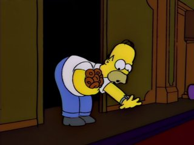

Homer Simpson
Familjens överhuvud
Homer Jay Simpson
Den öldrickande, munkälskande, kärnkraftverksarbetande patriarken. Homer är känd för sin kärlek till Duff-öl, sin soffa och sitt odödliga utrop "D'oh!". Trots sin lättja och sina brister älskar han sin familj över allt annat.
Ålder: 39
Jobb: Säkerhetsinspektör
Favoritmat: Munkar
Catchphrase: "D'oh!"